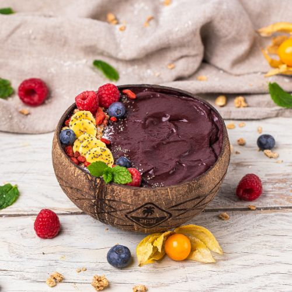

Acai Bowl
Back to Homepage

Acai bowl is a popular brazilian dish consisting of acai berries, banana, and various toppings. It is often
served with granola, nuts, and fresh fruits. The dish is known for its vibrant colors and delicious flavors.
Ingredients:
- 1 cup acai berries
- 1 banana
- 1 cup mixed fruits (strawberries, blueberries, etc.)
- 1/4 cup granola
- 2 tbsp nuts (almonds, walnuts, etc.)
Instructions:
- Blend the acai berries with the banana until smooth.
- Pour the mixture into a bowl.
- Top with the mixed fruits, granola, and nuts.